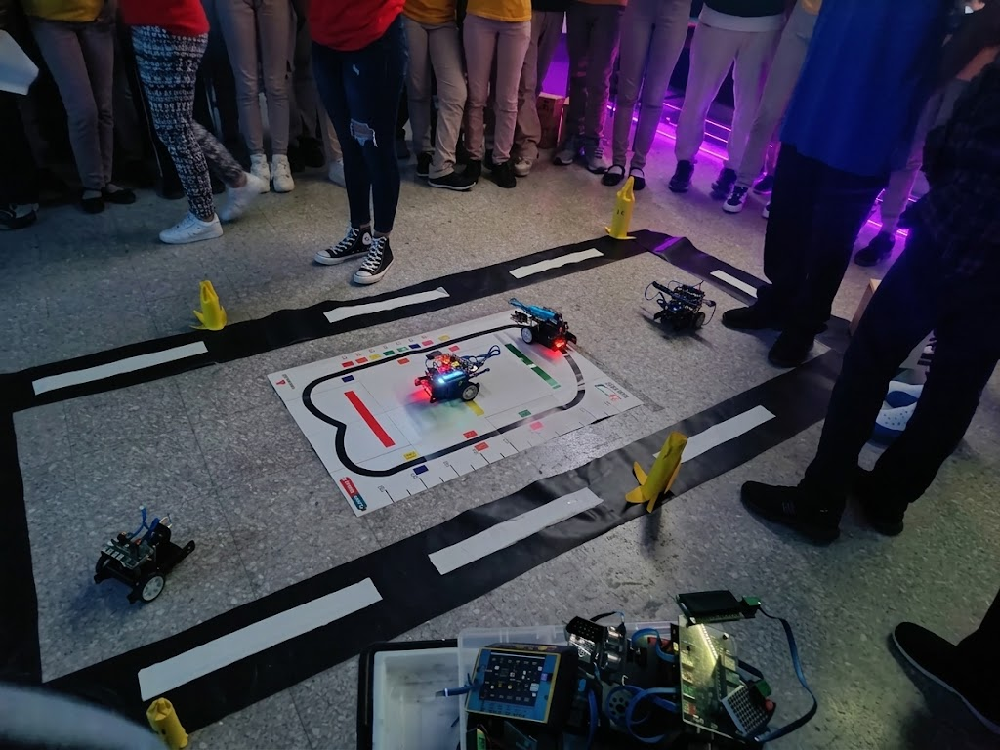

La Feria Técnica del Politécnico Plinio Martínez constituye un espacio de encuentro, aprendizaje y exhibición en el que nuestros estudiantes tienen la oportunidad de presentar los conocimientos, habilidades y competencias desarrollados durante su formación académica y técnica.
A través de la exposición de proyectos, demostraciones prácticas y trabajos realizados en las diferentes especialidades técnicas, los estudiantes ponen en evidencia su creatividad, iniciativa, capacidad para resolver problemas y preparación para enfrentar los desafíos del mundo laboral y profesional.
Esta actividad fomenta el aprendizaje basado en proyectos, el trabajo colaborativo, el pensamiento crítico y el espíritu emprendedor. Asimismo, permite integrar los conocimientos teóricos con experiencias prácticas, fortaleciendo la confianza de los estudiantes y su capacidad para comunicar ideas, compartir soluciones y demostrar lo aprendido.
La Feria Técnica también representa una oportunidad para que docentes, familias y visitantes conozcan el potencial de nuestros jóvenes, valoren el esfuerzo realizado durante el proceso educativo y reconozcan la importancia de la educación técnico-profesional para el desarrollo de la sociedad.
Con esta iniciativa, el Politécnico Plinio Martínez reafirma su compromiso con una educación de calidad, orientada al desarrollo de competencias, la innovación y la formación integral de estudiantes capaces de contribuir positivamente a su comunidad y al país.
¡Celebramos el talento de nuestros estudiantes y el poder de aprender haciendo!

.jpeg)